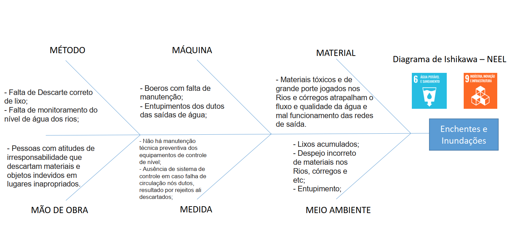

O que é o NEEL?
O NEEL é um projeto de alunos do curso de Engenharia de Computação da Universidade São Francisco que visa integrar os conhecimentos das diferentes disciplinas do curso ao mesmo tempo em que estimula a criatividade e solução de problemas.
Objetivos do projeto
O objetivo do projeto é idealizar, construir e implementar um sistema capaz de detectar enchentes e inundações em um ambiente urbano e alertar a população sobre o risco de acidentes decorrentes desses eventos.
Como funciona?
1) Será realizado o controle de nível de água de um reservatório (rio, córrego etc) com diferentes níveis de volume;
2) Determinado nível será explicitado como nível crítico e outro nível, um pouco abaixo, como Estado de Alerta;
3) Estado de Alerta será identificado com o BIP de um Buzzer intercalado por um período de tempo X, indicando uma possibilidade de nível crítico;
4) O estado crítico é a possível inundação acontecendo. Nesse momento, o sensor mandará um sinal para o microcontrolador, que, por sua vez, acionará o driver responsável pelo acionamento da BOMBA 1, que abrirá uma comporta para esvaziar água pelos dutos jogando numa rede de distribuição para o tratamento da água e reutilização da mesma;
5) Em caso de entupimento do duto da BOMBA 1, um LED começará a piscar indicando falha no sistema e o sensor de obstrução mandará um sinal para o microcontrolador para desligar BOMBA 1 e Ligar a BOMBA 2 como escape de emergência até que se resolva o entupimento da BOMBA 1;
6) Os parâmetros como Nível de água e Funcionamento de sistema serão mostrados em tempo real em um display LCD controlado pelo Arduino, bem como o Microcontrolador;
7) O Hardware para acionamento dos motores será uma placa externa que será desenvolvida desde o circuito até a fabricação da PCI.
Planejamento
